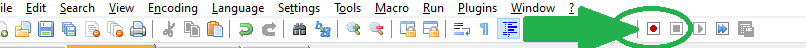

- Mise en place
- Création des répertoires et du fichier html
-
Dans l'explorateur de fichiers de windows, choisissez
ce PC, puis le disque(Z:). -
Créez un répertoire
R102-html. Dans ce répertoire, créez un répertoiretp1. -
Dans le répertoire
tp1, ajoutez un nouveau fichier : clic-droit > Nouveau > Document texte -
Renommez le fichier créé pour l'appeler
index.htmlVous devez donc enlever l'extension
.txtque windows a rajoutée par défaut. Si votre navigateur de fichiers n'affiche pas les extensions, allez dans l'onglet Affichage, et cochez la case Extensions de noms de fichiers
-
- Configuration de Notepad++
-
Toujours dans l'explorateur de fichiers, associez les fichiers ".html" avec le logiciel "Notepad++".
Pour cela, sélectionnez le fichier. Ensuite, dans le menu contextuel c'est-à-dire par un clic-droit, choisissez "Propriétés". Au niveau de "S'ouvre avec", utilisez le bouton "Modifier". Dans la fenêtre qui s'ouvre alors, choisissez le logiciel notepad ++.
Si vous ne trouvez pas le logiciel dans la liste proposée, utilisez l'option "plus d'applications", puis éventuellement l'option "Rechercher une autre application". Un explorateur de fichier s'ouvre alors dans le répertoire Programmes. Vous devriez y trouver un sous-répertoire Notepad ++, et à l'intérieur, le fichier notepad++.exe. Sélectionnez-le.
Validez en appuyant d'abord sur le bouton "Appliquer", puis sur le bouton "Ok". Vous devez alors constater que l'icône associée au fichier
index.htmla changé. Dans ce cas, tout va bien. -
Ouvrez le fichier
index.htmlavec Notepad++. Il vous suffit à présent de double-cliquer dessus. -
Sélectionnez le menu Settings, puis l'option Préférences. Dans la liste à gauche, choisissez Auto-Completion. Cochez les 6 cases de la zone "Auto-Insert" : de celle avec une parenthèse ouvrante, jusqu'à celle qui mentionne "html/xml close tag". Refermez ensuite la boîte de dialogue.
-
Testons à présent votre installation. En première ligne, tapez la déclaration du doctype vue en cours. Puis en seconde ligne, tapez la balise ouvrante de l'élément html, c'est-à-dire <html>. Deux choses doivent se produire :
-
Lorsque vous tapez le caractère ">", Notepad++ doit compléter automatiquement, en ajoutant la balise fermante </html>
-
Tout doit être coloré en bleu
-
-
Si tout s'est bien passé, vous êtes prêt. Sinon, demandez de l'aide au chargé de tp.
Vous êtes libre d'utiliser d'autres outils. Mais le chargé de tp n'est pas tenu de vous fournir une assistance sur leur fonctionnement.
-
- Création des répertoires et du fichier html
- Structure html classique
- Squelette
Vous êtes à présent dans Notepad++. Le fichier
index.htmlest ouvert, et contient uniquement la balisehtml.-
Ajoutez deux fils à l'élément
html, en insérant les balises ouvrantes et fermantesheadpuisbody -
Ajoutez deux fils à l'élément
head:meta, puistitle.Rappel :
metaest une balise unaire -
Ajoutez l'attribut
charsetdans la balise<meta>, avec la valeurutf-8 -
Ajoutez comme contenu de l'élément
title, la chaine de caractères "1er html". -
Ajoutez quatre fils à l'élément
body:headerasidemainfooter -
Attention :
Dans Notepad++, la barre principale indiquant la localisation de votre fichier débute surement par un *. De même, dans l'onglet, l'icône devant le nom du fichier est certainement de couleur rouge.
Cela indique que vous n'avez pas sauvegardé. C'est-à-dire que le travail fait dans Notepad++ n'a pas été écrit sur le disque dur, là où est réellement le fichier
index.html. Utilisez le raccourci Ctrl+S, constatez que l'astérisque disparait, et que l'icône passe au bleu. -
Vérifiez que tout est bien indenté : ici par exemple .
-
- Visualisation
-
Ouvrez le fichier
index.htmlavec Firefox. Vous pouvez procéder par drag n drop, à partir du navigateur (de fichier) windows, vers le navigateur (internet) Firefox. Ou bien, en ouvrant directement le fichier à partir de Firefox, avec le raccourci Ctrl+O, et en recherchant le fichierindex.htmlsur le disqueZdans le répertoire correspondant. -
Pour l'heure, on obtient seulement une page blanche. On pourrait croire qu'il n'y a pas de contenu.
Ceci dit, dans l'onglet, on voit apparaitre le contenu de l'élément
title. C'est Firefox qui a librement décidé d'utiliser cette information de cette manière. Vous n'obtiendriez surement pas le même comportement sur un téléphone portable par exemple.Il y a pourtant bien un contenu. Demandez à voir le code source de la page, avec le raccourci Ctrl+U. Vous voyez ce que vous avez tapé dans Notepad++. Dans le cas contraire, vous n'avez probablement pas sauvegardé.
-
Firefox offre l'inspecteur, un outil de visualisation et de manipulation du code source intéressant : utilisez le raccourci Ctrl+Shift+I
Un onglet Inspector apparaît, dans lequel vous voyez ce que firefox a compris en lisant le fichier.
Vous pouvez le modifier en live. Par exemple, changez le contenu de l'élément
titleet observer la conséquence sur le nom de l'onglet.Remarquez la structure arborescente des emboitements des éléments. (si vous ne comprenez pas cette phrase, consultez vos notes d'amphi)
-
Attention : Vous pouvez modifier la page
index.htmldans l'inspector. C'est parfait pour faire des essais et du debug. Mais ces changements ne seront pas sauvegardés dans le fichierindex.html.Faites l'essai. Modifiez quelques éléments, sauvegardez, puis utilisez la touche F5 pour demander à Firefox de recharger la page (c'est-à-dire de relire le fichier sur le disque).
-
- Squelette
- Contenu
Utilisons à nouveau Notepad++ pour éditer (i.e. modifier) le contenu du fichier
index.html.- header
-
Ajoutez trois fils à l'élément
header:h1h2p -
Dans
h1spécifiez le titre principal : "Premier document html". -
Dans
h2spécifiez le sous-titre : "Structure standard d'une page html". -
Dans
prevendiquez la page : indiquez vos nom, prénom, et groupe de tp. (faites une phrase…) -
Comme à l'exercice précédent, vérifiez l'indentation.
-
Visualisez avec Firefox (par exemple, en rechargeant la page avec F5) … bien sûr, il aura fallu sauvegarder.
-
- aside
-
Ajoutez trois fils à l'élément
aside:imgppRappel :
imgest une balise unaire. -
Là où se trouve le fichier index.html, créez un nouveau répertoire et appellez-le
images. Téléchargez une image et sauvegardez-la dans ce répertoire. (par exemple celle-ci)Pour utilisez cette image, renseignez la valeur de l'attribut
srcde la baliseimg.Pour être en conformité avec la norme, renseignez aussi l'attribut
altde la balise avec une description de l'image. -
Remplissez les deux éléments
p. Par exemple "Cette page est réalisée en première année d'informatique, à l'iut d'Orsay, dans le cadre du cours R1.02". Et "Elle constitue la pierre angulaire des sciences de l'information, sans qui aucune construction métapanthéorique n'est sereinement envisageable par un esprit multidimentionnel sain." … ou bien deux autres paragraphes d'introduction.
-
- footer
-
Ajoutez deux fils à l'élément
footer:paddress -
Dans l'élément
p, indiquez les copyright, ou les mentions légales, ou toute autre information technique pertinente pour ce document. Par exemple "All rights reserved to Metatron, the scribe". -
Dans l'élément
address, insérez un premier fils de typep, qui vous servira à mentionner l'adresse postale de l'iut.Ajoutez un second fils de type
a, dont le contenu affiché sera "site web", et dont l'attributhrefpermettra d'aller vers la page d'accueil de l'iut. -
Vérifiez l'indentation.
-
Visualisez.
-
Vérifiez que le lien mène à la page voulue.
-
- main
Nous avons définitivement épuisé notre imagination pour procéder au remplissage du contenu. Nous allons donc recourir à un outil classique pour le remplissage : un générateur de texte. Utilisons par exemple celui-ci
-
Ajoutez trois fils
sectionà l'élémentmain. -
Ajoutez dans chacune de ces trois sections, un fils
h1, puis deux à quatrearticle. Variez la quantité d'articleselon les sections pour mieux tester les rendus. -
Remplissez les titres avec un numéro, de 1 à 3, suivi de quelques mots.
-
Dans chaque article, débutez par un fils
h2, puis deux à cinqp. A nouveau, variez les quantités. -
Utilisez pour chaque
h2une numérotation imbriquée, c'est-à-dire le numéro duh1parent, suivit d'un point, suivit d'un numéro propre auh2(de 1 à 4). Complétez le titre avec quelques mots de votre choix. -
Remarquez que dans Notepad++ les symboles
+à gauche, à côté des numéros de ligne, vous permettent de replier le contenu d'un élément. Cela peut vous aider à voir seulement ce qui vous intéresse, mais aussi à débuger l'imbrication de vos balises ouvrantes et fermantes. -
On veut garnir les éléments
pavec une phrase aléatoire. Cette activité devient infernale si vous la faites brutalement ! Nous allons donc préférer une approche quelque peu automatisée.-
Dans un fichier auxiliaire, copiez une bonne quantité de paragraphes aléatoires, suffisante pour le nombre de
pque vous devez garnir. Si vous avez utilisé le site proposé, chaque paragraphe copié s'étend sur une seule ligne, puis être séparé du suivant par une ligne blanche. -
Placez le curseur au début de la première ligne.
-
Dans la barre des icônes de Notepad++, appuyez sur la touche "Start recording"
 -
Ecrivez "
<p>" en début de ligne. -
Appuyer sur la touche
Finde votre clavier pour aller en fin de ligne. -
Ecrivez "
</p>" en fin de ligne. -
Avec les flèches du curseur de votre clavier, avancez jusqu'au début de la ligne suivante (en passant la ligne vide donc).
-
Dans la barre d'icônes, appuyez sur la touche "Stop recording", juste à côté de l'icône "Strat recording".
-
Les actions que nous avons enregistrées débutent à un état bien précis : être au début d'une ligne "intéressante". Elles ajoutent alors les balises voulues. Puis reviennent dans le même état, mais pour la ligne suivante.
Nous pouvons donc re-jouer/re-executer ces actions, avec un bon espoir de répéter le comportement voulu sur des données correctes.
Utilisez l'icône "Playback", située juste après deux première.
-
Recliquez autant de fois que nécessaire, ou utilisez l'icône suivante.
-
Dans le fichier
index.html, remplacez les élémentspvide par ceux ainsi créés.
-
-
Vérifiez l'indentation.
-
Visualisez.
-
- header
- Validation
-
Validez votre document html pour garantir qu'il respecte les normes actuelles, avec cet outil en ligne . Et corrigez les éventuelles erreurs (mais pas nécessairement les warning).
Attention : ignorerez les cas suivants :
Trailing slash on void elements has no effect and interacts badly with unquoted attribute values.
-
{kind=link}